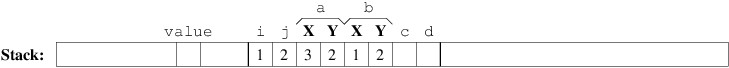
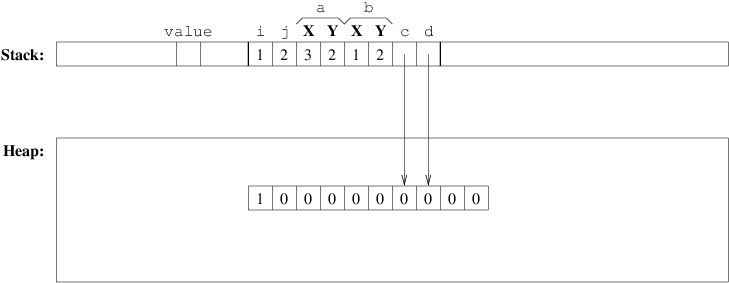

What is stored in the space allocated for a variable depends on whether the variable is for a value type or a reference type. For a value type, the value of the variable is stored directly in the space allocated for it. There are two kinds of value types: structures and enumerations. Examples of structures include numeric types such as int, double, and char. An example of an enumeration is DialogResult (see "MessageBoxes" and "File Dialogs").
Because value types are stored directly in variables, whenever a value is assigned to a variable of a value type, the entire value must be written to the variable. For performance reasons, value types therefore should be fairly small.
For reference types, the values are not stored directly into the space allocated for the variable. Instead, the variable stores a reference, which is like an address where the value of the variable can actually be found. When a reference type is constructed with a new expression, space for that instance is allocated from a large data structure called the heap (which is unrelated to a heap used to implement a priority queue). Essentially, the heap is a large pool of available memory from which space of different sizes may be allocated at any time. We will not go into detail about how the heap is implemented, but suffice it to say that it is more complicated and less efficient than the stack. When space for a reference type is allocated from the heap, a reference to that space is stored in the variable. Larger data types are more efficiently implemented as reference types because an assignment to a variable of a reference type only needs to write a reference, not the entire data value. There are three kinds of reference types: classes, interfaces, and delegates. Delegates are used to represent individual methods, and are beyond the scope of this course.Variables of a reference type do not need to refer to any data value. In this case, they store a value of null (variables of a value type cannot store null). Any attempt to access a method, property, or other member of a null or to apply an index to it will result in a NullReferenceException.
The fields of classes or structures are stored in a similar way, depending on whether the field is a value type or a reference type. If it is a value type, the value is stored directly in the field, regardless of whether that field belongs to an object allocated from the stack or the heap. If it is a reference type, it stores either null or a reference to an object allocated from the heap.
The difference between value types and reference types can be illustrated with the following code example:
private int[] DoSomething(int i, int j)
{
Point a = new Point(i, j);
Point b = a;
a.X = i + j;
int[] c = new int[10];
int[] d = c;
c[0] = b.X;
return d;
}
Suppose this method is called as follows:
int[] values = DoSomething(1, 2);The method contains six local variables: i, j, a, b, c, and d. int is a structure, and hence a value type. Point is a structure (and hence a value type) containing public int properties X and Y, each of which can be read or modified. int[ ], however, is a reference type. Space for all six of these variables is allocated from the stack, and the space for the two Points includes space to store the two int fields for each. The values 1 and 2 passed for i and j, respectively, are stored directly in these variables, as shown in the following figure:


On the other hand, consider what happens when something similar is done with array variables. When c is constructed, it is assigned a new array allocated from the heap and containing 10 locations. These 10 locations are automatically initialized to 0. However, because an array is a reference type, the variable c contains a reference to the actual array object, not the array itself. Thus, when c is copied to d, the array itself is not copied - the reference to the array is copied. Consequently, d and c now refer to the same array object, not two different arrays that look the same. Hence, after we assign c[0] a value of 1, d[0] will also contain a value of 1 because c and d refer to the same array object. (If we want c and d to refer to different array objects, we need to construct a new array for each variable and make sure each location of each array contains the value we want.) The following figure illustrates the storage layout just prior to the return:

The array returned therefore resides on the heap, and contains 1 at index 0, and 0 at each of its other nine locations. The six local variables are returned to unused stack space; however, because the array was allocated from the heap, the calling code may continue to use it:
public class C
{
private C _nextC;
. . .
}
Such circularity would be impossible for a value type because there
would not be room for anything else if we tried to include a value
of type C within a value of type C. However,
because C is a class, and hence a reference type,
_nextC simply contains a reference to some object of type
C. When the runtime system constructs an instance of type
C, it just needs to make it large enough to hold a
reference, along with any other fields defined within C.
Such recursive definitions are a powerful way to
link together many instances of a type. See "Linked
Lists" and "Trees" for more
information.
Because all types in C# are sub-types of object, which is a reference type, every value type is a subtype of at least one reference type (however, value types cannot themselves have sub-types). It is therefore possible to assign an instance of a value type to a variable of a reference type; for example:
object x = 3;When this is done, a boxed version of the value type is constructed on the heap, and the value copied to it. The boxed version of the value type is just like the original value type, except that it is accessed by reference, not by value. A reference to this boxed version is then assigned to the variable of the reference type. Note that multiple variables of the reference type may refer to the same boxed instance of the value type.
Note that boxing may also occur when passing parameters. For example, suppose we have a method:
private object F(object x)
{
. . .
}
If we call F with a parameter of 3, then 3 will need to be
copied to a boxed int, and a reference to this boxed
int will be assigned to x on the call stack.
Last modified: Thu Dec 21 13:53:16 CST 2017
© Copyright 2013, 2014, 2017, Rod Howell. All rights reserved.|
|
|
|